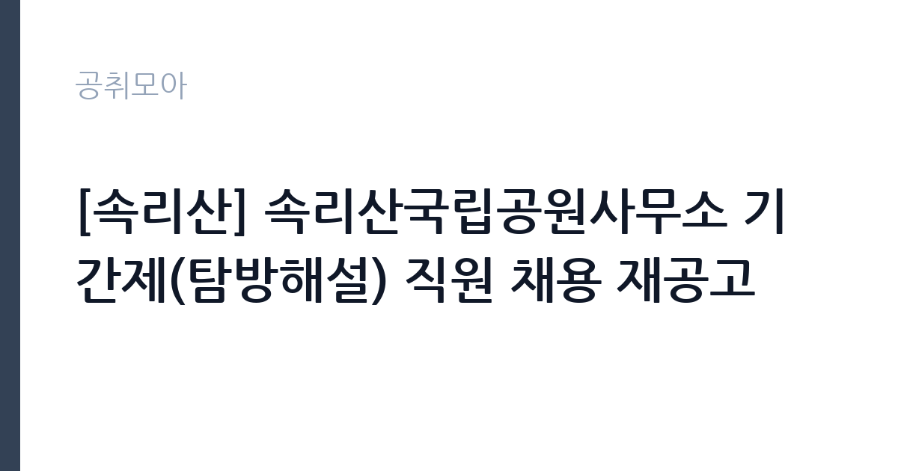

[공공기관] [속리산] 속리산국립공원사무소 기간제(탐방해설) 직원 채용 재공고
국립공원공단 · 충북 · 마감 2026-10-08 (D-14) · 출처 잡알리오

한눈에 보는 모집 조건
| 기관 | 국립공원공단 |
|---|---|
| 공고명 | [속리산] 속리산국립공원사무소 기간제(탐방해설) 직원 채용 재공고 |
| 고용형태 | 기간제 |
| 근무지 | 충북 |
| 게시일 | 2026-09-24 |
| 마감일 | 2026-10-08 (D-14) |
지원자격, 이렇게 읽으세요
- 공공기관 채용공시
- 세부 조건은 원문 공고문 확인
이 채용의 필수 자격은 자연환경해설사 양성기관에서 환경부령이 정한 교육과정을 수료한 것입니다. 자연환경보전법 제59조의2제1항에 따른 것으로, 양성기관의 1차 필기시험과 2차 해설시연 평가를 통과해 수료증을 받은 분을 말합니다. 수료증이 없으면 서류전형 대상에서 제외되니 반드시 확인하시기 바랍니다. 전공과 학력, 연령 제한은 없습니다. 공단 인사규정 제18조의 결격사유에 해당하지 않고 근무 시작 예정일부터 근무할 수 있어야 합니다. 장애인 채용 우대가 적용되므로 해당자는 가점 서류를 빠짐없이 준비하시기 바랍니다.
이 공고의 포인트
이 공고의 강점은 분명합니다. 첫째, 진입 장벽이 낮습니다. 학력과 전공, 나이를 묻지 않고 자연환경해설사 수료증 하나로 지원할 수 있습니다. 둘째, 급여 조건이 투명합니다. 1차 공고 기준으로 월급여 233만9,310원 세전, 주40시간 전일제이며 4대 보험이 적용됩니다. 셋째, 재공고라 경쟁이 분산됐을 가능성이 있습니다. 탐방해설 경력은 이후 공단 공무직이나 다른 국립공원 사무소 채용에 쓸 수 있는 실무 경력이 됩니다. 속리산과 보은, 괴산 일대에서 근무할 수 있는 분께는 더할 나위 없는 자리입니다.
전형은 어떻게 진행되나
전형은 서류전형과 면접전형 두 단계입니다. 서류전형은 직업기초능력과 직무수행능력으로 평가하고 채용 예정 인원의 3배수를 뽑으며, 동점자는 전원 합격합니다. 면접전형은 직업기초역량과 직무수행역량을 봅니다. 최종 합격자는 서류 40퍼센트와 면접 60퍼센트를 합산해 최고득점자 순으로 정합니다. 우대 가점이 5퍼센트에서 10퍼센트까지 반영되니 해당자는 증빙을 확실히 챙기시기 바랍니다. 면접에서는 현장 해설 시연이나 상황 대처 질문이 나올 수 있으니 속리산의 주요 탐방 코스와 해설 포인트를 미리 정리해 가시기 바랍니다.
원문에서 확인한 전형 방식
- 공단인사규정 제18조(결격사유)에 해당하지 않는 자 - 근무시작(예정)일부터 근무 가능한 자 - 연령, 전공, 학력 제한없음
이런 분께 추천해요
- 자연환경해설사 수료증을 보유하고 현장 해설 경험을 쌓고 싶은 분께 추천합니다.
- 학력과 전공, 연령 제한 없는 공공기관 일자리를 찾는 분께 잘 맞습니다.
- 보은과 괴산, 속리산 일대에 거주하시거나 근무가 가능한 분께 좋은 기회입니다.
지원 전 체크리스트
- 자연환경해설사 수료증을 발급받았고 사본을 준비했습니다.
- 방문 또는 우편 접수 방법과 마감 시각을 확인하고 여유 있게 접수했습니다.
- 우대 가점 해당자는 증빙 서류를 빠짐없이 첨부했습니다.
- 속리산 주요 탐방 코스와 해설 자원을 정리해 면접을 대비했습니다.
모집 일정과 제출 타이밍
재공고 접수 마감은 2026년 10월 8일입니다. 1차 모집은 9월 9일부터 9월 23일까지 진행됐고, 채용 예정일은 10월 1일이었습니다. 재공고는 일정이 앞당겨질 수 있으니 마감일을 넘기지 않도록 주의하시기 바랍니다. 계약 기간은 계약 체결일부터 2026년 12월 31일까지로, 올해 남은 약 3개월간의 단기 계약입니다. 계약 만료 후 연장 여부는 공단 사정에 따르므로 원문 공고문에서 확인하시기 바랍니다. 방문 또는 우편 접수이므로 우편 접수자는 배송 기간을 감안해 최소 이틀 전에는 발송하시기 바랍니다.
직무 이해하기: 공공기관
탐방해설 직원은 국립공원을 찾는 탐방객에게 자연과 역사, 문화를 설명하는 일을 합니다. 생태탐방 프로그램의 개발과 운영, 탐방안내와 탐방객 서비스 제공, 자연과 역사, 문화 해설과 해설자원 모니터링이 주요 직무입니다. 해설은 단순 안내가 아니라 탐방객의 안전과 자연보호 의식을 높이는 교육 활동입니다. 속리산은 법주사와 세조길, 문장대 코스로 유명한 산이라 역사와 문화 해설의 비중이 큽니다. 주말과 성수기에는 탐방객이 몰리므로 체력과 현장 대응력이 필요합니다.
자기소개서 작성 팁
기간제 해설직 자기소개서는 해설에 대한 열정과 현장 경험을 구체적으로 쓰는 것이 핵심입니다. 자연환경해설사 과정을 수료하면서 인상 깊었던 실습이나 해설 시연 경험을 사례로 풀어주시기 바랍니다. 속리산을 직접 탐방했던 경험이 있다면 어떤 코스에서 무엇을 느꼈는지 쓰시면 진정성이 전달됩니다. 탐방객 응대나 민원 대응 경험도 플러스 요인입니다. 짧은 계약직이라도 공단의 자연보전 미션에 공감한다는 태도를 보여주시기 바랍니다.
면접 준비 포인트
면접에서는 해설 역량과 탐방객 응대 태도를 중점적으로 봅니다. 1분에서 3분 분량의 모의 해설을 준비해 가시면 큰 무기가 됩니다. 속리산의 대표 명소 하나를 골라 자연과 역사 이야기를 엮은 해설 원고를 만들어 두시기 바랍니다. 탐방로에서 다친 탐방객이나 무리한 요구를 하는 탐방객을 만났을 때의 대처법을 묻는 경우도 많으니 안전 수칙 중심으로 답변을 정리하시기 바랍니다. 단기 계약이라는 점을 언급하며 성실히 근무하겠다는 각오를 밝히시기 바랍니다.
급여·근무조건 읽는 법
보수는 1차 공고문에 명시되어 있습니다. 월급여 233만9,310원 세전, 주40시간 전일제입니다. 같은 사무소, 같은 직무의 재공고이므로 동일한 조건일 가능성이 크지만, 재공고 공문에서 금액이 바뀌었을 수 있으니 원문 공고문에서 반드시 재확인하시기 바랍니다. 기본급 외에 시간외수당이나 휴일수당은 실제 근무에 따라 별도 지급될 수 있습니다. 실수령액은 4대 보험료와 세금을 제외한 금액이므로 세전 급여와 구분해서 계산하시기 바랍니다. 계약 기간이 2026년 12월 31일까지인 단기 계약이라 퇴직금 발생 여부도 원문에서 확인하시기 바랍니다. 경쟁률과 합격선은 공개되지 않았습니다.
자주 묻는 질문
- 자연환경해설사 수료증이 없으면 지원할 수 없습니까?
이번 모집의 필수 자격이므로 수료증이 없으면 지원할 수 없습니다. 양성기관 교육과정과 평가 일정을 확인해 다음 기회를 준비하시기 바랍니다. - 계약이 끝나면 연장됩니까?
계약 기간은 2026년 12월 31일까지이며, 연장 여부는 공단 사정과 예산에 따라 달라집니다. 원문 공고문과 사무소에 확인하시기 바랍니다. - 근무지는 어디입니까?
속리산국립공원사무소이며, 1차 공고 기준 근무지역은 충청북도 보은군과 괴산군 일대입니다. 정확한 근무 장소는 재공고 원문에서 확인하시기 바랍니다.
함께 보면 좋은 공고
[공공기관] 발전공기업 통합실무지원단장 채용공고 — 마감 2026-10-08[공공기관] [설악산] 설악산국립공원 기간제 직원[환경관리(한시인력)] 채용 공고 — 마감 2026-10-01[공공기관] 2026년도 한국등산트레킹지원센터 기간제근로자(보훈 제한경쟁) 채용 재공고 — 마감 2026-10-07출처: 잡알리오 공개정보를 바탕으로 공취모아가 정리한 안내글입니다. 모집 조건·일정은 변경될 수 있으니 지원 전 반드시 원문 공고문을 확인하세요. 본 글은 정보 제공용이며 합격을 보장하지 않습니다.